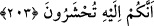

âhırette de iyilik ve güzellik ver. Bizi cehennem azâbından koru!” duâsını çok okurdu.
[128]
Âyetin işârî mânâsına gelince; vuslat menâsikini tamamlayıp kemâl sâhibi ricâl
mertebesine ulaştığınızda sakın Allah’ın mekrinden emîn olmayın. Sakın ola ki zikr-i
ilâhî görevinizi ihmâl etmeyin. Çocukluğunuzda nasıl ihtiyacınız olduğunda, acze
düştüğünüzde veya canınız sıkıldığında ebeveyninizi çağırıyor idi iseniz, aynı şekilde
Allah’ı çağırın. O’nu anın. Sizin Allah adamı olduğunuz zamanki huccet ve iftihârınız
O’nun sevgisi olacaktır. Allah’ı, O’na olan ihtiyacınızı ve O’nun sevgisiyle iftihârınızı
bilerek tam anlamıyla anın. Âyette “veya daha fazla zikredin” diye te’kid edilmiştir.
Çünkü çocuk başında velisi olunca kendini Allah’dan müstağnî sayar. Bunun gibi, bâliğ
olan kimse de Allah’dan başkasıyla iftihâr edebilir. Oysa kullar için Allah’dan başka ne
bir velî, ne de bir koruyucu vardır.
İnsanlardan; sülûk yoluna girmiş tâlib ve sâliklerden bazıları nisyân ile kendilerini
vuslata ve kemâle ermiş sanarak nefse aldanıp güven duymaya başlayabilir. Bu duruma
düşünce de: “Ey Rabbim, bize dünyâda iyilik ver” demekle yetinir. Yâni nefsi dünyaya
meylederek gerçek gayeyi unutur. Tâlib kendisine kurulan tuzağı göremez ve kendisini
gayret ve çalışmadan müstağnî sanarak zikir görevini, nefs, kalb ve sır ile ilgili riyâzat,
murâkabe ve kontrol vazifelerini unutur. Nefsin esâretine düşer, hevâ ve arzularının
tutsağı olur. Şeytan onu yeryüzünde şaşkına çevirir. Hatta sonuçta mahrûmiyet, hicrân ve
fırkat vâdîlerine düşürür. Âhırette onun iyilikten hiçbir nasîbi olmayacaktır.
Vuslat ve fütüvvet ehlinden bazıları ise: “Ey Rabbımız bize zâhiri nimetler türünden
âfiyet, sıhhat, genişlik, ferâgat, tâat, Hakk’a yöneliş, irşâd, ahlâk gibi güzel nimetler ver.
Âhırette de bâtınî nimetler türünden keşf, müşâhede, kurb ve vuslat ver. Bizi cehennem
azâbından; Hak’tan mahrûmiyet ateşi ve ayrılık yangınından koru. Böyleleri için bir
nasîb vardır. Yâni ricâl olma şerefine kavuşmuş ve vuslata ermiş olanlar için bir nasîb
vardır. Bu nasîb de onların ulaştıkları makam, kerâmet ve hasenât olarak istedikleri
şeylerdir. Allah, hesâbı son derece çabuk olandır. O’nun hesâbının çabukluğu
kendisinden dünyâ ve âhıret talebinde bulunan insanların herbirine niyetleri ölçüsünde
aynı olacaktır. et-Te’vîlâtü’n-Necmiyye’de böyle yazılıdır.
203. Sayılı günlerde (eyyâm-ı teşrikte telbiye ve tekbir getirerek) Allah’ı anın. Kim
iki gün içinde acele edip (Mina’dan Mekke’ye) dönmek isterse, ona günah yoktur.